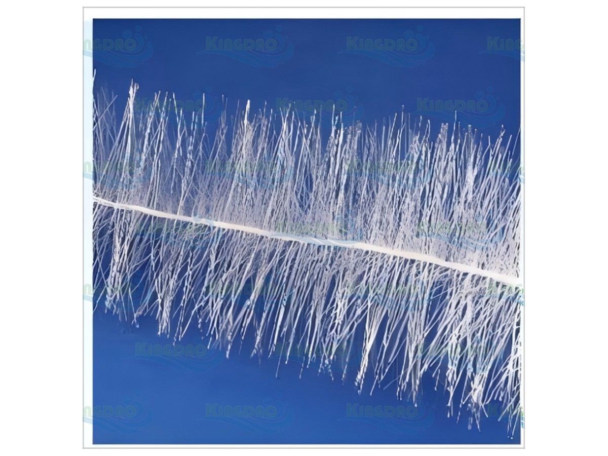
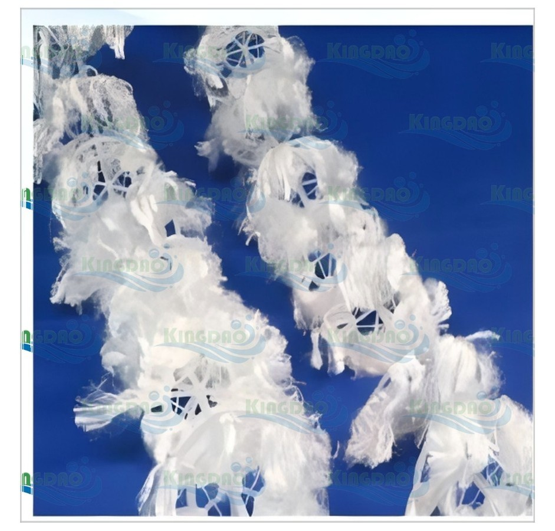
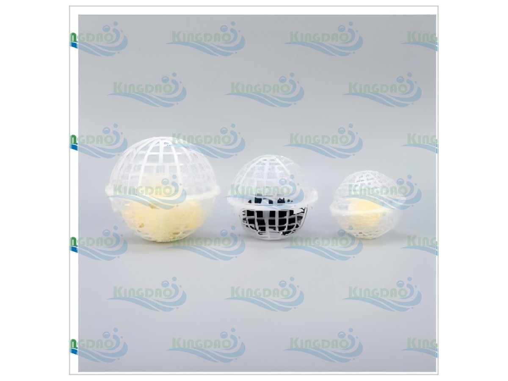
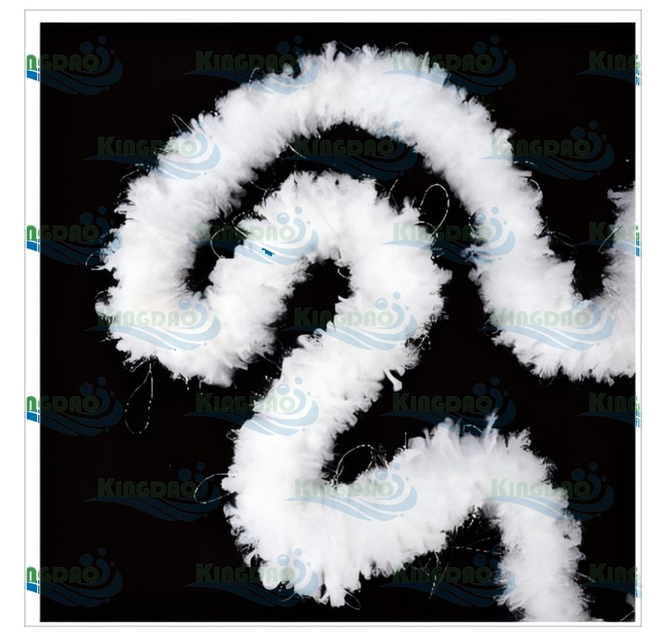

In short: Bio-media for fixed-film and moving-bed biological stages. Specific surface is selected against the organic load rather than the tank volume, the void ratio is kept open enough to avoid clogging, and the structure lets excess biofilm shed instead of accumulating.
Fixed-film media give the biology a surface to grow on, which lets a plant carry more biomass in the same tank volume, or run at a longer sludge age without a larger clarifier. The two forms we supply serve different purposes: rope media in fixed or moving arrangements, elastic media where a simple, low-cost surface is enough.
Media selection is about specific surface area, void ratio and how well the biofilm sheds. Too dense and the bed clogs; too open and there is not enough surface to be worth the tank.
Same order as the tables above — the physical unit behind each specification.




Specific surface decides how much biomass the tank can carry; void ratio decides whether the bed clogs.
| Specification | Biofilm weight kg/m³ | Specific surface m²/m³ |
|---|---|---|
| Φ120 × 0.35 | 84 | 380 |
| Φ150 × 0.36 | 69 | 310 |
| Φ120 × 0.37 | 65 | 296 |
| Φ180 × 0.45 | 62 | 265 |
| Φ180 × 0.50 | 57 | 250 |
| Φ200 × 0.45 | 55 | 260 |
Rope-type filler carries attached biomass above 15,000 mg/L; the radial ring structure keeps the void ratio high for three-phase mass transfer.
Biofilm weight and specific surface area are the only two numbers that decide how much biology a given volume of tank can hold. The rest is yarn diameter.
| Specification (mm) | Biofilm weight (kg/m³) | Surface area (m²/m³) |
|---|---|---|
| Φ120 × 0.35 | 84 | 380 |
| Φ150 × 0.36 | 69 | 310 |
| Φ120 × 0.37 | 65 | 296 |
| Φ180 × 0.45 | 62 | 265 |
| Φ180 × 0.50 | 57 | 250 |
| Φ200 × 0.45 | 55 | 260 |
Specification is nominal diameter × yarn diameter. The finer yarn gives more surface but less void — pick by the solids load, not by the biggest number in the table.
Why the yarn construction matters. The centre rope is what carries the load. Our rope-type media is a high-elasticity blended yarn: a single braided strand takes 5 kg, and with 12 strands per section the assembled rope takes 60 kg — which is what stops the media breaking when biofilm weight builds up and the flow starts pulling at it.
Installing it. Frame spacing 100–200 mm both ways, which works out to 25–100 m of rope per cubic metre of frame. Tie with PP or PE ties — no cutting needed. In an aerated basin either separate the media from the diffusers with a baffle (spacing 100–150 mm), or mount directly above the diffusers so the air/water mix reaches the biofilm (spacing 150–200 mm).
What it does well. Fast biofilm formation, good sloughing and renewal, strong shock-load tolerance, and it cuts the rising bubbles repeatedly on the way up — which is where the oxygen transfer gain comes from. It does not ball up, does not clog, and can be reused.
Where it is used. Low-strength domestic sewage, medium-strength dyeing and paper effluent, oily wastewater, high-strength food and chemical effluent — aerobic, anoxic or anaerobic stages.
Plastic ring as the frame with aldehyde yarn fixed around it — Φ150 / Φ180 / Φ200, plastic or fibre centre rope. Combines the soft and semi-soft types: hangs uniformly, films fast, sheds old film readily, and tolerates high-strength liquor better than either parent type.
Two injection-moulded hemispheres clipped into a mesh sphere with a fibre core. Three-dimensional, high surface area, dosed loose with no frame — it carries both anoxic and aerobic zones inside one unit, so it doubles as a small A/O reactor.
Rigid tube and FPK inclined-plate packing for settlers and clarification, specified from the settling area and the rise rate.
| Nominal diameter (mm) | Pieces per m³ |
|---|---|
| Φ150 | 300 |
| Φ100 | 1000 |
| Φ80 | 2000 |
Selecting media: tell us the process stage, the tank volume, the COD and solids load, and whether the basin is aerated. Media type and fill fraction follow from those four, not from a catalogue page.
MBBR · fixed-film upgrades · anoxic zones · aquaculture
Flow, the medium, the installation and the discharge requirement — that is enough to select and quote.
Elastic filler suits fixed-film arrangements where biomass hangs in a defined depth; rope type suits deeper tanks and higher surface area per unit volume. The arrangement follows the process, not the other way round.
From the organic load and the specific surface in m2/m3, not from the tank volume. Filling a tank by percentage alone is how plants end up with too little surface for the load.
Void ratio. The structure is open enough that solids pass through and biomass sheds when it gets too thick, so the bed does not blind over.
By shedding: when the biofilm gets too thick it detaches under its own weight and flow, which keeps the aerobic layer active instead of dying at the base.
Biofilm weight in kg/m3 and specific surface in m2/m3 per type - the two numbers the process calculation actually needs.